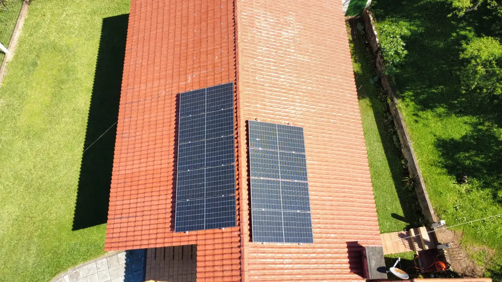

Clientes
Clientes atendidos pela M&A
Registros de entrega feitos pela nossa equipe.



A Praça Angelo Darolt fica no Centro de Medianeira, junto à Av. Brasília. Muitos imóveis em volta são alugados. Esta página traz os números da região e explica como ter energia solar em imóvel alugado, ou gerar em um endereço e usar em outro.
Atendimento de segunda a sexta, das 8h às 18hNo OpenStreetMap, a Praça Angelo Darolt aparece no bairro Centro, ao lado da Av. Brasília. Já a Rua Angelo Darolt, que leva o mesmo nome, fica em outra parte da cidade: nos bairros Jardim Belo Horizonte e Planalto, segundo os Correios.
A praça está na faixa de CEP 85720. Dos 1.326 sistemas solares dessa faixa registrados pela ANEEL, 469 geram em um endereço e abatem a conta de outro. É a modalidade chamada autoconsumo remoto, e ela responde por 35% dos sistemas dessa faixa.
Fontes: OpenStreetMap; Correios, base de CEP por logradouro; ANEEL, Relação de Empreendimentos de Geração Distribuída (dados de outubro de 2026, por faixa de CEP).
A primeira forma é instalar no imóvel alugado. Quem pede a ligação é o titular da conta da Copel, que pode ser o inquilino. A obra no telhado precisa da autorização do proprietário, e convém registrar no contrato o que acontece com o sistema na saída.
O sistema não fica preso ao imóvel. Módulos, inversor e estrutura podem ser desmontados e levados para outro endereço. Há o custo da desmontagem e de um novo pedido à Copel, e o telhado antigo é entregue vedado.
A segunda forma é gerar em outro lugar. Quem tem casa própria, chácara ou barracão instala o sistema lá e direciona os créditos para o ponto alugado. As duas contas precisam estar no mesmo CPF ou CNPJ e na área da Copel. Se o negócio mudar de endereço, basta trocar a unidade que recebe os créditos.
A terceira parte do proprietário. Um imóvel com energia solar tem conta de luz menor, e isso pode entrar na negociação do aluguel. Nesse caso, o sistema é do dono do imóvel, e a conta da Copel precisa ser acertada entre as partes para que os créditos cheguem a quem usa a energia.
Registros de entrega feitos pela nossa equipe.
A M&A Soluções Energéticas tem sede em Medianeira, na Av. Brasil, 4212, bairro Independência, e atende na região da Praça Angelo Darolt com equipe própria. O projeto é assinado pelo engenheiro eletricista Luiz Carlos da Cruz, CREA-PR 165161/D, e a ligação na Copel é acompanhada por nós até a troca do medidor. A mão de obra da instalação tem garantia de 5 anos. O prazo final depende da Copel. A finalização do nosso serviço leva em torno de 45 a 60 dias.
O passo a passo da obra está em instalação de energia solar em Medianeira. Para valores, veja orçamento e financiamento. Os dados do município inteiro estão em energia solar em Medianeira.
Mande a foto da fatura do seu ponto na região da Praça Angelo Darolt e diga se o imóvel é próprio ou alugado. Indicamos a forma mais vantajosa.
Enviar conta agora Estudo gratuito · Seg a Sex, 8h às 18h